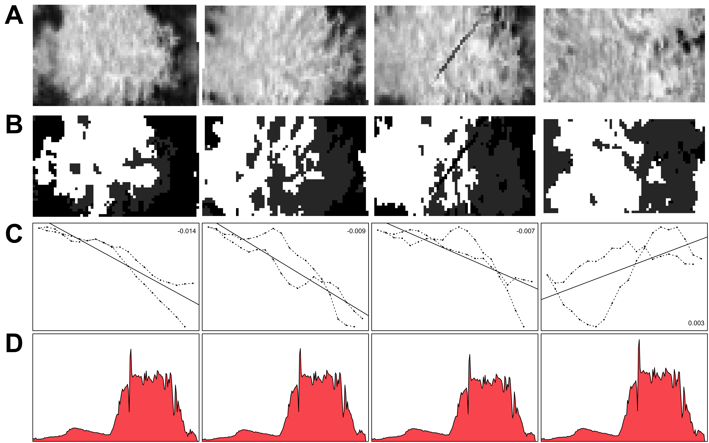

5 Describing, processing and inspecting the data
The data utilized for this thesis originates from the Westfield almond orchard, situated in Woodland, California, USA (38.66722 N, -121.88989 E). This orchard houses two major almond cultivars, specifically Nonpareil and Monterey, both of which were planted in 2010. An aerial image of the entire Westfield almond orchard spanning 60 ha is displayed in figure 5.1. In the context of the project, ground truth data concerning foliar nitrogen concentration was gathered from 125 target trees sampled across the site, thereby supplying the information for the response variable.
This chapter outlines the methodologies implemented for data capture1 and offers an in-depth account of the data characteristics. In addition, I will clarify techniques and strategies employed in the pre-processing of both spectroradiometric data and hyperspectral images.
1 It should be noted that the data capture occurred during the summer of 2022, prior to me joining the research group. However, for the sake of comprehensiveness, this chapter will provide a description of the data capture as well.

5.1 Description of the data set
Within the Westwind orchard, 125 trees were identified as target trees of interest. From each of these trees, Momtanu Chakraborty collected five to six leaves, which were subsequently weighed, photographed, dried, and weighed once more. The leaf area was calculated from the photographs. Both leaf area and leaf dry mass are crucial measurements for converting mass-based nitrogen (N%) to area-based nitrogen (Narea) via the leaf mass per area (LMA, Equation 1.3). Subsequently, the dry leaves from each target tree were combined and ground using a Mixer Mill MM 400 laboratory grinder manufactured by Retsch (Haan, North Rhine-Westphalia, Germany). The pulverized samples were sent to the A&L Western Laboratories (Modesto, CA 95351, USA) for nitrogen concentration analysis. In order to determine the nitrogen concentration of the samples, the laboratory employed Kjeldahl digestion.
Regarding the leaf level data, the Digital Agriculture Laboratory team measured the reflectance and transmittance of all 741 collected leaves utilizing a HR-1024i spectroradiometer manufactured by Spectra Vista Corporation (Poughkeepsie, NY 12603, USA). Consequently, spectroradiometric data was accessible for the five to six individual leaves per tree, while the nitrogen concentration was only available for the combined set of leaves.
The hyperspectral images were captured on the 12th of July 2022 by Momtanu Chakraborty and Hamid Jafarbiglu. They utilized the hyperspectral camera Pika L, manufactured by Resonon Inc. (Bozeman, MT 59715, USA), which was mounted on a Matrice 600 drone produced by DJI Technology Co. (Nanshan, Shenzhen, China). The hyperspectral camera gathers data via line-scanning, whereby hyperspectral images are recorded one line of pixels at a time using a two-dimensional dispersing element and a two-dimensional detector array (El Masry and Sun 2010). Although line-scanning makes it more challenging to obtain a stable image, it helps avoid the hot spot effect, which may arise in multispectral images captured around noon (Jafarbiglu and Pourreza 2023). The line-scanning sensor circumvents the hot-spot effect when the scanned line is perpendicular to the angle of solar incidence, i.e., in the east-west direction. Consequently, the hyperspectral images were captured in a north-south orientation.
| Level | Observations | Bands | Range | Sensor |
|---|---|---|---|---|
| Leaf | 124 | 1024 | 338 - 2512 nm | HR-1024i |
| Canopy | 107 | 151 | 385 - 900 nm | Pika L |
An overview of both the leaf-level and canopy-level data is presented in table 5.1. Initially, there were 125 target trees; however, one collection of leaves was lost, and the drone carrying the hyperspectral camera experienced a crash, leading to differing numbers of observations for the canopy-level data.
5.2 Pre-processing the spectroradiometric data
The leaf-level data acquired from the spectroradiometer required only minimal pre-processing. Any recorded values below zero were adjusted to zero in order to rectify discrepancies. Further processing included removing noisy and overlapping regions to enhance data clarity (as to be seen in figure 5.2). To align the reflectance and transmittance as closely as possible with the nitrogen labels, the weighted mean for every band was computed within each group of leaves from a single tree, whereby the measured leaf weights appropriately served as the statistical weights. The rationale behind this procedure is that heavier leaves have a more significant impact on the nitrogen label of their group, and thus should also exert a more substantial influence on the reflectance and transmittance data.
To conform to the requirements of the Prospect-Pro model, the data was interpolated to specific wavelengths between 400 and 2500 nm. This interpolation was performed using local polynomial regression, utilizing the function loess from the R package stats with the parameter span = 0.025 (R Core Team 2022).
5.3 Pre-processing of the hyperspectral images
The acquired hyperspectral images were saved as batches of ENVI-files (.bip, band inter-leaved by line). Each of these files is essentially a three-dimensional array containing up to 2000 × 900 × 200 values: there are 200 bands, 900 pixels per line, and (at most) 2000 lines scanned. Subsequent batches of lines scanned were written to another ENVI-file. Additionally, a single file of irradiance measurements was generated for each batch of ENVI-files captured. The raw data recorded by the sensors were unitless. To convert them to radiance and irradiance, the shutter speeds and the sensor’s sensitivity at each wavelength must be considered. Reflectance can then be calculated from irradiance and radiance as shown in equation 1.2. All these calculations were performed using the Spectronon Pro software by Resonon Inc. (Bozeman, MT 59715, USA). The resulting hyperspectral images contained reflectance data and thus were standardized between 0 and 1.
The following step involved the georeferencing the data. Georeferencing is to the process of manipulating geographic data such that it aligns with a known coordinate system, enabling analysis and comparison with other geographic data (Wade et al. 2006). Consequently, each observational unit, in this case the hyperspectral data of every pixel, must be assigned a specific coordinate point. Orthorectification is particularly crucial in this context: aerial images must be processed to ensure they are geometrically accurate, akin to a geographic map. Orthorectification corrects for lens distortion, camera tilt, perspective, and topographic relief. This entire process was also conducted using Spectronon Pro. However, the results were often unsatisfactory, as entire batches appeared distorted. The scanning line of the hyperspectral camera seemed to have varied its scanning angle relative to the flight direction during the drone flight, causing local image tilting. This tilting of the data was not something the georeferencing functions of Spectronon Pro could address. To rectify the tilt, I opted to adjust the cropping polygons during the tree-cropping stage rather than improve the georeferencing, as this was a more straightforward technical solution.
The objective of tree cropping is to generate a separate hyperspectral image for each tree in the orchard. This step is essential for computational reasons, as it is impractical to work with the entire dataset simultaneously.2 Dividing the hyperspectral data into multiple files allows subsequent processes to be applied to individual images of cropped trees. For this cropping procedure, polygons defining the precise cut-out area for each tree needed to be established. However, as the hyperspectral images were not always accurately georeferenced, they had to be manually compared with the orthomosaic shown in figure 5.1, and the polygons had to be adjusted manually to align with the expected tree coordinates. Once all polygons were defined, the cropping was carried out using Python scripts originally authored by Ali Mohigimi and Yuto Kamiya, in addition to the QGIS software (QGIS Development Team 2022).
2 The combined hyperspectral images had an approximate file size of 150 GB, which is far too large for programs to handle all at once.
Once all images were cropped, the quality of the cropping was assessed. By employing a simple linear model on a transformation of the image data, it was possible to estimate whether the vegetation (determined by the NDVI) was centred in the cropped image. The fourth column in figure 5.3 displays an instance where the tree is not centred, resulting in a linear model slope that is opposite in direction compared to the others. Consequently, the slope of this straightforward model could serve as an indicator of the centricity of the images, enabling to make necessary readjustments during the cropping stage.
The average cropped image had dimensions of 56 × 38 × 200, which translates to over 400,000 values per hyperspectral image. With only 124 observations, such a number of predictors is rather excessive. To address this, the dimensions of the hyperspectral images were reduced by eliminating all spatial dimensions, retaining only the spectral dimension. However, calculating the mean reflectance of the entire image for each spectral band would have diluted the signal due to interference from shadows and soil. Consequently, the cropped images were semantically segmented into bright leaves, obscure areas, and soil, with only the bright leaf areas contributing to the retrieved mean spectral reflectance. Semantic segmentation refers to the task of assigning a class to each pixel in an image, rather than to the image as a whole (Guo et al. 2018). The semantic segmentation was performed using an extreme gradient boosting model with the R package xgboost (Chen et al. 2022). To facilitate learning, various vegetation indices were calculated for each pixel and used as features alongside the greyscale values, as opposed to using the original features.
A training dataset comprising 690 observations from 23 cropped images was manually created for the machine learning model. The extreme gradient boosting model demonstrated an overall test accuracy of 0.94, with most of the error source stemming from confusion between soil and shadow. The bright leaf area exhibited a test precision of 0.99 and a test recall of 0.97, indicating that almost no non-leaf area was mislabelled as leaf, and very few leaf areas were labelled as non-leaf areas. Examples of the semantically segmented images can be viewed in figure 5.3.
The reflectance signal beyond 900 nm wavelength becomes highly unstable due to water vapour interference, as illustrated in figure 1.3, and does not align with the canopy’s expected magnitude of reflectance. Consequently, the data was further reduced by discarding any bands beyond 900 nm wavelength. This reduction meant that the reflectance of each tree was effectively condensed to a vector containing only 161 values.

5.4 Z-score normalization
In multiple instances so far, one could observe that the spectral signature of plants follows a specific pattern, consistently showing different magnitudes of reflectance for the same wavelengths (e.g., figure 5.3 at the bottom). Light absorption is typically higher in the red and blue band areas, while it is lower in the green, red edge, and near-infrared areas. The variance of the collected data at each wavelength is not absolute but rather proportional to the reflectance’s magnitude. Importantly, the differing magnitudes of the variables do not correspond to their relative importance for predicting crop nitrogen. However, if left untreated, variables with larger magnitudes and variances may unjustly dominate certain models. A common strategy employed in machine learning to address this issue is z-score normalization. With respect to a single vector \(\mathbf x\), z-score normalization can be expressed as follows.
\[\mathbf z = \frac{\mathbf x - \mu_x}{\sigma_x} \tag{5.1}\]
Here, \(\mu_x\) represents the mean of \(\mathbf x\), \(\sigma_x\) denotes the standard deviation of \(\mathbf x\), and \(\mathbf z\) is the z-score normalized vector. This procedure creates a vector \(\mathbf z\) which has a mean of \(\mu_z = 0\) and a variance of \(\sigma_z^2 = 1\), as illustrated graphically in figure 5.4. Z-score normalization of each column of the input data matrix \(\mathbf X\) offers multiple benefits. It results in a homogeneous treatment of the error and enables iterative optimization algorithms to converge more quickly in finding the parameters of machine learning models (Geladi and Kowalski 1986, Ioffe and Szegedy 2015). Therefore, it streamlines the training process of machine learning models — particularly when gradient descent is employed in the training process (Nawi et al. 2013).
In addition to addressing the issue of equal variable importance, z-score normalization enhances the interpretability of many models, as coefficients are no longer relative to the variable magnitude. For these reasons, z-score normalization was applied to both leaf-level and canopy-level data before proceeding to the modelling phase.
5.5 Exploratory data analysis
In this section, a superficial exploration of the data sets, including both the predictor data listed in table 5.1 as well as the response, will be conducted.
All predictor data sets containing reflectance and transmittance data show extremely high multicollinearity. This becomes evident when examining the correlation matrices (Figure 5.5 A), where bright areas indicate highly collinear variables. The collinearity is further emphasized by a principal component analysis, in which the variance explained by additional principal components rapidly diminishes and falls below 1% after only the third or fourth principal component, depending on the data set (Figure 5.5 D).
An inspection of the correlations of single wavelength reflectance or transmittance to the nitrogen concentration in figure 5.5 C reveals that the strongest direct link occurs in the red light area at precisely 700 nm wavelength (\(r = -0.48\)) for the leaf-level reflectance data. The correlation to nitrogen of the canopy-level reflectance data roughly matches the leaf-level reflectance data, although it is considerably less pronounced (\(r = -0.32\)). The correlation in the red light area can be attributed to the absorption of red light by chlorophyll and its connection to nitrogen.
Interestingly, the near-infrared and particularly the short-wave-infrared areas (where the absorption spectra of protein reside) appear to be less informative about the foliar nitrogen concentration (Figure 5.5 C). Nevertheless, the information in these areas is independent of the information in the visible light area, as displayed by the correlation matrices for the leaf-level data (Figure 5.5 A).
Overall, the transmittance data exhibits a weaker correlation with nitrogen than the reflectance data. However, there are spikes of negative correlations in the areas where protein reflects minimally — consequently, the correlation is negative in these parts. A similar pattern can be observed for the reflectance data, albeit less pronounced.
Upon examining the pairs panel in figure 5.6, the measurements reveal notable and positive correlations among wet weight, dry weight, and leaf area. Specifically, the correlation between the wet weight of the leaves and their corresponding leaf area is particularly solid (\(r=0.91\)). This finding should hardly come as a surprise.
Additionally, it becomes evident that mass-based nitrogen (N%) and area-based nitrogen (Narea) display a very low correlation (\(r = 0.093\)). This observation is particularly surprising, given that the two traits can be converted into each other through leaf mass per area (LMA), as described by equation 1.3. Leaf mass per area, calculated from dry mass and leaf area, can be loosely interpreted as leaf thickness. It is strongly and positively correlated with Narea (\(r = -0.85\)), but exhibits a slight negative correlation with N% (\(r = -0.43\)). This relationship can be attributed to a dilution effect caused by carbohydrates on nitrogen concentration (N%): higher carbohydrate concentrations result in a measured lower concentration of nitrogen, even if the absolute nitrogen content remains unchanged.
Consequently, Baret et al. (2007) suggested that Narea should be the preferred metric. Nonetheless, the mass-based nitrogen N% remains the chief determinant in fertilization management decisions, as it is the most important part of equation 1.1. Therefore, I will primarily focus on the estimation of nitrogen concentration in leaves and canopy rather than the area-based nitrogen.